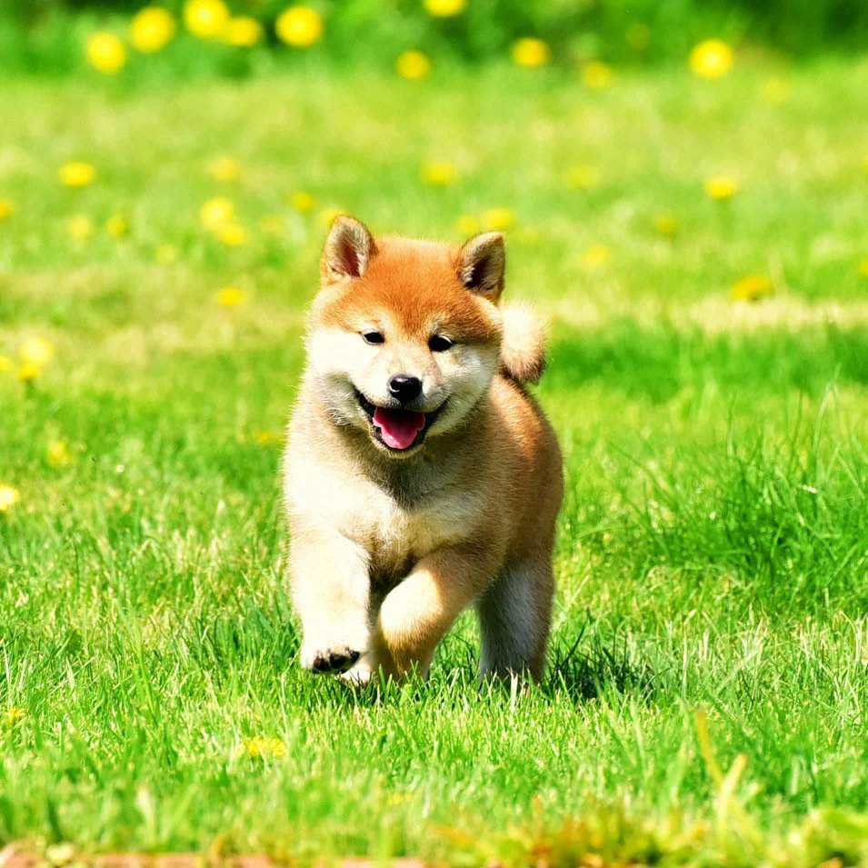

Си́ба-и́ну, или сиба-кэн (яп. 柴犬), — порода охотничьих собак, выведенная на японском острове Хонсю, самая мелкая из шести пород исконно японского происхождения. В 1936 году объявлена национальным достоянием Японии, где основное поголовье этих собак находится в деревнях.